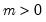
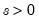
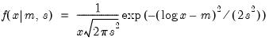
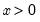

@rlognorm Element Functions | String Functions Log normal distribution random draw. Syntax: @rlognorm(m, s) m: number,  s: number,  Return: number Draw a random value from the log normal error distribution with density function,  for  and 0 otherwise. Examples = @rlognorm(0, 2) returns a random draw from the log-normal(0, 2) distribution. Cross-references See also @clognorm, @dlognorm, and @qlognorm.